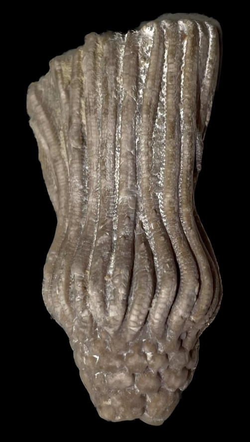
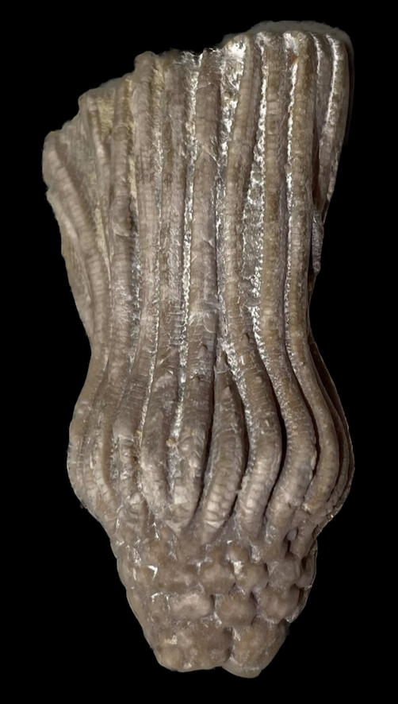

Cusacrinus nodobrachiatus
Mississippian
Hampton Formation/Maynes Creek Formation
Le Grand, Iowa, USA
Size: 5 cm crown
Here is another species of Cusacrinus from LeGrand, this time characterized by its minimally-ornamented, tumid (a.k.a. bulbous/swollen) calyx plates. Laudon and Beane's original study of the LeGrand crinoids described three species of "Cactocrinus": C. nodobrachiatus, C. arnoldi and C. ornatissimus. The former two were distinguished based on their degree of calyx plate tumidity among other factors, but these two species have been since merged into the single species of nodobrachiatus. As you may notice, they were also reclassified as belonging to the genus Cusacrinus, which is related to but distinct from Cactocrinus. In any case this specimen of C. nodobrachiatus lies on the tumid extreme of the spectrum for the species. The infrabasal circlet is preserved, just pushed into the calyx. Also note how its calyx is proportionately more conical and elongated compared to the calyx of C. ornatissimus.
 
